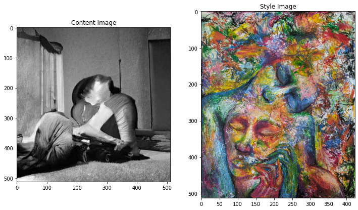
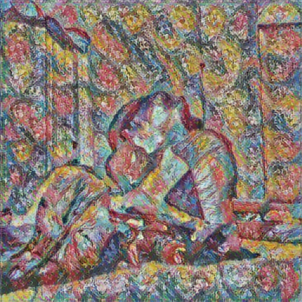
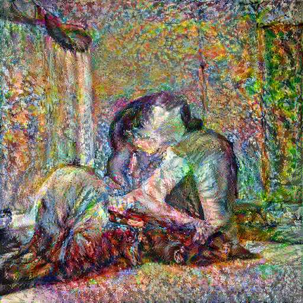
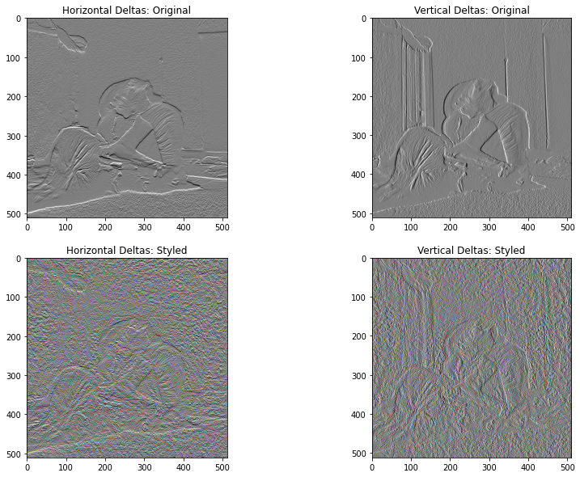
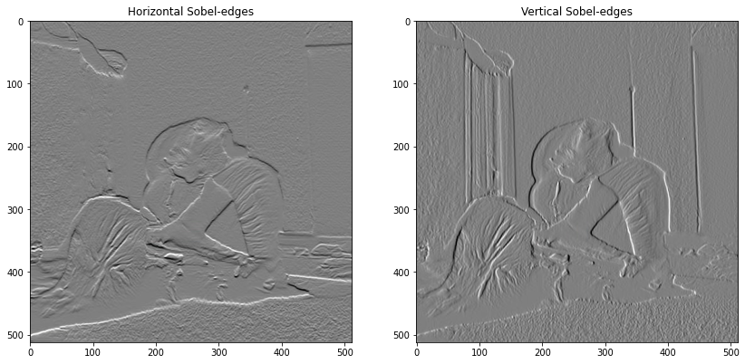
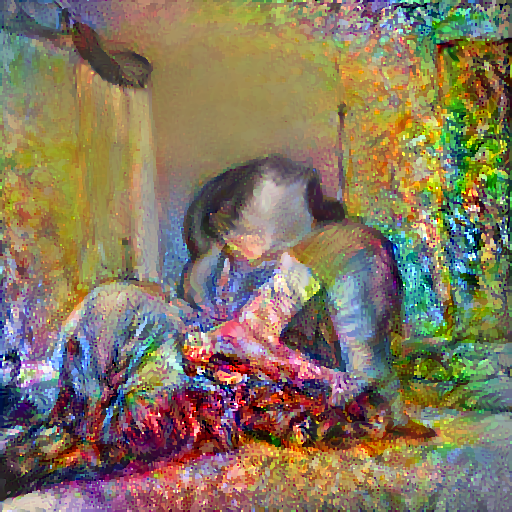

|
|
|
 View on GitHub View on GitHub
|
|
|
#@title Licensed under the Apache License, Version 2.0 (the "License");
# you may not use this file except in compliance with the License.
# You may obtain a copy of the License at
#
# https://www.apache.org/licenses/LICENSE-2.0
#
# Unless required by applicable law or agreed to in writing, software
# distributed under the License is distributed on an "AS IS" BASIS,
# WITHOUT WARRANTIES OR CONDITIONS OF ANY KIND, either express or implied.
# See the License for the specific language governing permissions and
# limitations under the License.This tutorial uses deep learning to compose one image in the style of another image (ever wish you could paint like Picasso or Van Gogh?). This is known as neural style transfer and the technique is outlined in A Neural Algorithm of Artistic Style (Gatys et al.).
Note: This tutorial demonstrates the original style-transfer algorithm. It optimizes the image content to a particular style. Modern approaches train a model to generate the stylized image directly (similar to cyclegan). This approach is much faster (up to 1000x).
For a simple application of style transfer check out this tutorial to learn more about how to use the pretrained Arbitrary Image Stylization model from TensorFlow Hub or how to use a style transfer model with TensorFlow Lite.
Neural style transfer is an optimization technique used to take two images—a content image and a style reference image (such as an artwork by a famous painter)—and blend them together so the output image looks like the content image, but “painted” in the style of the style reference image.
This is implemented by optimizing the output image to match the content statistics of the content image and the style statistics of the style reference image. These statistics are extracted from the images using a convolutional network.
For example, let’s take an image of this dog and Wassily Kandinsky's Composition 7:

Yellow Labrador Looking, from Wikimedia Commons by Elf. License CC BY-SA 3.0

Now how would it look like if Kandinsky decided to paint the picture of this Dog exclusively with this style? Something like this?

import os
import tensorflow as tf
# Load compressed models from tensorflow_hub
os.environ['TFHUB_MODEL_LOAD_FORMAT'] = 'COMPRESSED'import IPython.display as display
import matplotlib.pyplot as plt
import matplotlib as mpl
mpl.rcParams['figure.figsize'] = (12, 12)
mpl.rcParams['axes.grid'] = False
import numpy as np
import PIL.Image
import time
import functoolsdef tensor_to_image(tensor):
tensor = tensor*255
tensor = np.array(tensor, dtype=np.uint8)
if np.ndim(tensor)>3:
assert tensor.shape[0] == 1
tensor = tensor[0]
return PIL.Image.fromarray(tensor)Download images and choose a style image and a content image:
# content_path = tf.keras.utils.get_file('YellowLabradorLooking_new.jpg', 'https://storage.googleapis.com/download.tensorflow.org/example_images/YellowLabradorLooking_new.jpg')
# style_path = tf.keras.utils.get_file('kandinsky5.jpg','https://storage.googleapis.com/download.tensorflow.org/example_images/Vassily_Kandinsky%2C_1913_-_Composition_7.jpg')Define a function to load an image and limit its maximum dimension to 512 pixels.
def load_img(path_to_img):
max_dim = 512
img = tf.io.read_file(path_to_img)
img = tf.image.decode_image(img, channels=3)
img = tf.image.convert_image_dtype(img, tf.float32)
shape = tf.cast(tf.shape(img)[:-1], tf.float32)
long_dim = max(shape)
scale = max_dim / long_dim
new_shape = tf.cast(shape * scale, tf.int32)
img = tf.image.resize(img, new_shape)
img = img[tf.newaxis, :]
return imgCreate a simple function to display an image:
def imshow(image, title=None):
if len(image.shape) > 3:
image = tf.squeeze(image, axis=0)
plt.imshow(image)
if title:
plt.title(title)content_image = load_img('c_g.jpg')
style_image = load_img('s.png')
plt.subplot(1, 2, 1)
imshow(content_image, 'Content Image')
plt.subplot(1, 2, 2)
imshow(style_image, 'Style Image')
This tutorial demonstrates the original style-transfer algorithm, which optimizes the image content to a particular style. Before getting into the details, let's see how the TensorFlow Hub model does this:
import tensorflow_hub as hub
hub_model = hub.load('https://tfhub.dev/google/magenta/arbitrary-image-stylization-v1-256/2')
stylized_image = hub_model(tf.constant(content_image), tf.constant(style_image))[0]
tensor_to_image(stylized_image)
Use the intermediate layers of the model to get the content and style representations of the image. Starting from the network's input layer, the first few layer activations represent low-level features like edges and textures. As you step through the network, the final few layers represent higher-level features—object parts like wheels or eyes. In this case, you are using the VGG19 network architecture, a pretrained image classification network. These intermediate layers are necessary to define the representation of content and style from the images. For an input image, try to match the corresponding style and content target representations at these intermediate layers.
Load a VGG19 and test run it on our image to ensure it's used correctly:
x = tf.keras.applications.vgg19.preprocess_input(content_image*255)
x = tf.image.resize(x, (224, 224))
vgg = tf.keras.applications.VGG19(include_top=True, weights='imagenet')
prediction_probabilities = vgg(x)
prediction_probabilities.shapeTensorShape([1, 1000])predicted_top_5 = tf.keras.applications.vgg19.decode_predictions(prediction_probabilities.numpy())[0]
[(class_name, prob) for (number, class_name, prob) in predicted_top_5][('gasmask', 0.099235006),
('punching_bag', 0.047973413),
('banjo', 0.02787011),
('breastplate', 0.02721989),
('spotlight', 0.024717972)]Now load a VGG19 without the classification head, and list the layer names
vgg = tf.keras.applications.VGG19(include_top=False, weights='imagenet')
print()
for layer in vgg.layers:
print(layer.name)
input_6
block1_conv1
block1_conv2
block1_pool
block2_conv1
block2_conv2
block2_pool
block3_conv1
block3_conv2
block3_conv3
block3_conv4
block3_pool
block4_conv1
block4_conv2
block4_conv3
block4_conv4
block4_pool
block5_conv1
block5_conv2
block5_conv3
block5_conv4
block5_pool
Choose intermediate layers from the network to represent the style and content of the image:
content_layers = ['block5_conv2']
style_layers = ['block1_conv1',
'block2_conv1',
'block3_conv1',
'block4_conv1',
'block5_conv1']
num_content_layers = len(content_layers)
num_style_layers = len(style_layers)So why do these intermediate outputs within our pretrained image classification network allow us to define style and content representations?
At a high level, in order for a network to perform image classification (which this network has been trained to do), it must understand the image. This requires taking the raw image as input pixels and building an internal representation that converts the raw image pixels into a complex understanding of the features present within the image.
This is also a reason why convolutional neural networks are able to generalize well: they’re able to capture the invariances and defining features within classes (e.g. cats vs. dogs) that are agnostic to background noise and other nuisances. Thus, somewhere between where the raw image is fed into the model and the output classification label, the model serves as a complex feature extractor. By accessing intermediate layers of the model, you're able to describe the content and style of input images.
The networks in tf.keras.applications are designed so you can easily extract the intermediate layer values using the Keras functional API.
To define a model using the functional API, specify the inputs and outputs:
model = Model(inputs, outputs)
This following function builds a VGG19 model that returns a list of intermediate layer outputs:
def vgg_layers(layer_names):
""" Creates a vgg model that returns a list of intermediate output values."""
# Load our model. Load pretrained VGG, trained on imagenet data
vgg = tf.keras.applications.VGG19(include_top=False, weights='imagenet')
vgg.trainable = False
outputs = [vgg.get_layer(name).output for name in layer_names]
model = tf.keras.Model([vgg.input], outputs)
return modelAnd to create the model:
style_extractor = vgg_layers(style_layers)
style_outputs = style_extractor(style_image*255)
#Look at the statistics of each layer's output
for name, output in zip(style_layers, style_outputs):
print(name)
print(" shape: ", output.numpy().shape)
print(" min: ", output.numpy().min())
print(" max: ", output.numpy().max())
print(" mean: ", output.numpy().mean())
print()block1_conv1
shape: (1, 512, 423, 64)
min: 0.0
max: 777.8174
mean: 32.407192
block2_conv1
shape: (1, 256, 211, 128)
min: 0.0
max: 4020.33
mean: 189.45348
block3_conv1
shape: (1, 128, 105, 256)
min: 0.0
max: 8237.121
mean: 184.4236
block4_conv1
shape: (1, 64, 52, 512)
min: 0.0
max: 19033.44
mean: 695.30994
block5_conv1
shape: (1, 32, 26, 512)
min: 0.0
max: 2404.09
mean: 44.177475
The content of an image is represented by the values of the intermediate feature maps.
It turns out, the style of an image can be described by the means and correlations across the different feature maps. Calculate a Gram matrix that includes this information by taking the outer product of the feature vector with itself at each location, and averaging that outer product over all locations. This Gram matrix can be calculated for a particular layer as:
$$G^l_{cd} = \frac{\sum_{ij} F^l_{ijc}(x)F^l_{ijd}(x)}{IJ}$$
This can be implemented concisely using the tf.linalg.einsum function:
def gram_matrix(input_tensor):
result = tf.linalg.einsum('bijc,bijd->bcd', input_tensor, input_tensor)
input_shape = tf.shape(input_tensor)
num_locations = tf.cast(input_shape[1]*input_shape[2], tf.float32)
return result/(num_locations)Build a model that returns the style and content tensors.
class StyleContentModel(tf.keras.models.Model):
def __init__(self, style_layers, content_layers):
super(StyleContentModel, self).__init__()
self.vgg = vgg_layers(style_layers + content_layers)
self.style_layers = style_layers
self.content_layers = content_layers
self.num_style_layers = len(style_layers)
self.vgg.trainable = False
def call(self, inputs):
"Expects float input in [0,1]"
inputs = inputs*255.0
preprocessed_input = tf.keras.applications.vgg19.preprocess_input(inputs)
outputs = self.vgg(preprocessed_input)
style_outputs, content_outputs = (outputs[:self.num_style_layers],
outputs[self.num_style_layers:])
style_outputs = [gram_matrix(style_output)
for style_output in style_outputs]
content_dict = {content_name: value
for content_name, value
in zip(self.content_layers, content_outputs)}
style_dict = {style_name: value
for style_name, value
in zip(self.style_layers, style_outputs)}
return {'content': content_dict, 'style': style_dict}When called on an image, this model returns the gram matrix (style) of the style_layers and content of the content_layers:
extractor = StyleContentModel(style_layers, content_layers)
results = extractor(tf.constant(content_image))
print('Styles:')
for name, output in sorted(results['style'].items()):
print(" ", name)
print(" shape: ", output.numpy().shape)
print(" min: ", output.numpy().min())
print(" max: ", output.numpy().max())
print(" mean: ", output.numpy().mean())
print()
print("Contents:")
for name, output in sorted(results['content'].items()):
print(" ", name)
print(" shape: ", output.numpy().shape)
print(" min: ", output.numpy().min())
print(" max: ", output.numpy().max())
print(" mean: ", output.numpy().mean())Styles:
block1_conv1
shape: (1, 64, 64)
min: 0.0
max: 13388.328
mean: 292.9004
block2_conv1
shape: (1, 128, 128)
min: 0.0
max: 55069.473
mean: 9810.178
block3_conv1
shape: (1, 256, 256)
min: 0.0
max: 156029.69
mean: 8429.904
block4_conv1
shape: (1, 512, 512)
min: 0.0
max: 2975635.2
mean: 137861.39
block5_conv1
shape: (1, 512, 512)
min: 0.0
max: 96498.04
mean: 885.4972
Contents:
block5_conv2
shape: (1, 32, 32, 512)
min: 0.0
max: 806.90027
mean: 10.813094
With this style and content extractor, you can now implement the style transfer algorithm. Do this by calculating the mean square error for your image's output relative to each target, then take the weighted sum of these losses.
Set your style and content target values:
style_targets = extractor(style_image)['style']
content_targets = extractor(content_image)['content']Define a tf.Variable to contain the image to optimize. To make this quick, initialize it with the content image (the tf.Variable must be the same shape as the content image):
image = tf.Variable(content_image)Since this is a float image, define a function to keep the pixel values between 0 and 1:
def clip_0_1(image):
return tf.clip_by_value(image, clip_value_min=0.0, clip_value_max=1.0)Create an optimizer. The paper recommends LBFGS, but Adam works okay, too:
opt = tf.optimizers.Adam(learning_rate=0.02, beta_1=0.99, epsilon=1e-1)To optimize this, use a weighted combination of the two losses to get the total loss:
style_weight=1e-2
content_weight=1e4def style_content_loss(outputs):
style_outputs = outputs['style']
content_outputs = outputs['content']
style_loss = tf.add_n([tf.reduce_mean((style_outputs[name]-style_targets[name])**2)
for name in style_outputs.keys()])
style_loss *= style_weight / num_style_layers
content_loss = tf.add_n([tf.reduce_mean((content_outputs[name]-content_targets[name])**2)
for name in content_outputs.keys()])
content_loss *= content_weight / num_content_layers
loss = style_loss + content_loss
return lossUse tf.GradientTape to update the image.
@tf.function()
def train_step(image):
with tf.GradientTape() as tape:
outputs = extractor(image)
loss = style_content_loss(outputs)
grad = tape.gradient(loss, image)
opt.apply_gradients([(grad, image)])
image.assign(clip_0_1(image))Now run a few steps to test:
train_step(image)
train_step(image)
train_step(image)
tensor_to_image(image)Since it's working, perform a longer optimization:
import time
start = time.time()
epochs = 10
steps_per_epoch = 100
step = 0
for n in range(epochs):
for m in range(steps_per_epoch):
step += 1
train_step(image)
print(".", end='', flush=True)
display.clear_output(wait=True)
display.display(tensor_to_image(image))
print("Train step: {}".format(step))
end = time.time()
print("Total time: {:.1f}".format(end-start))
Train step: 1000
Total time: 411.5
One downside to this basic implementation is that it produces a lot of high frequency artifacts. Decrease these using an explicit regularization term on the high frequency components of the image. In style transfer, this is often called the total variation loss:
def high_pass_x_y(image):
x_var = image[:, :, 1:, :] - image[:, :, :-1, :]
y_var = image[:, 1:, :, :] - image[:, :-1, :, :]
return x_var, y_varx_deltas, y_deltas = high_pass_x_y(content_image)
plt.figure(figsize=(14, 10))
plt.subplot(2, 2, 1)
imshow(clip_0_1(2*y_deltas+0.5), "Horizontal Deltas: Original")
plt.subplot(2, 2, 2)
imshow(clip_0_1(2*x_deltas+0.5), "Vertical Deltas: Original")
x_deltas, y_deltas = high_pass_x_y(image)
plt.subplot(2, 2, 3)
imshow(clip_0_1(2*y_deltas+0.5), "Horizontal Deltas: Styled")
plt.subplot(2, 2, 4)
imshow(clip_0_1(2*x_deltas+0.5), "Vertical Deltas: Styled")
This shows how the high frequency components have increased.
Also, this high frequency component is basically an edge-detector. You can get similar output from the Sobel edge detector, for example:
plt.figure(figsize=(14, 10))
sobel = tf.image.sobel_edges(content_image)
plt.subplot(1, 2, 1)
imshow(clip_0_1(sobel[..., 0]/4+0.5), "Horizontal Sobel-edges")
plt.subplot(1, 2, 2)
imshow(clip_0_1(sobel[..., 1]/4+0.5), "Vertical Sobel-edges")
The regularization loss associated with this is the sum of the squares of the values:
def total_variation_loss(image):
x_deltas, y_deltas = high_pass_x_y(image)
return tf.reduce_sum(tf.abs(x_deltas)) + tf.reduce_sum(tf.abs(y_deltas))total_variation_loss(image).numpy()178357.45That demonstrated what it does. But there's no need to implement it yourself, TensorFlow includes a standard implementation:
tf.image.total_variation(image).numpy()array([178357.45], dtype=float32)Choose a weight for the total_variation_loss:
total_variation_weight=50Now include it in the train_step function:
@tf.function()
def train_step(image):
with tf.GradientTape() as tape:
outputs = extractor(image)
loss = style_content_loss(outputs)
loss += total_variation_weight*tf.image.total_variation(image)
grad = tape.gradient(loss, image)
opt.apply_gradients([(grad, image)])
image.assign(clip_0_1(image))Reinitialize the optimization variable:
image = tf.Variable(content_image)And run the optimization:
import time
start = time.time()
epochs = 20
steps_per_epoch = 100
step = 0
for n in range(epochs):
for m in range(steps_per_epoch):
step += 1
train_step(image)
print(".", end='', flush=True)
display.clear_output(wait=True)
display.display(tensor_to_image(image))
print("Train step: {}".format(step))
end = time.time()
print("Total time: {:.1f}".format(end-start))
Train step: 2000
Total time: 828.5
Finally, save the result:
file_name = 'stylized-image.png'
tensor_to_image(image).save(file_name)
try:
from google.colab import files
except ImportError:
pass
else:
files.download(file_name)<IPython.core.display.Javascript object><IPython.core.display.Javascript object>This tutorial demonstrates the original style-transfer algorithm. For a simple application of style transfer check out this tutorial to learn more about how to use the arbitrary image style transfer model from TensorFlow Hub.
{kind=link}